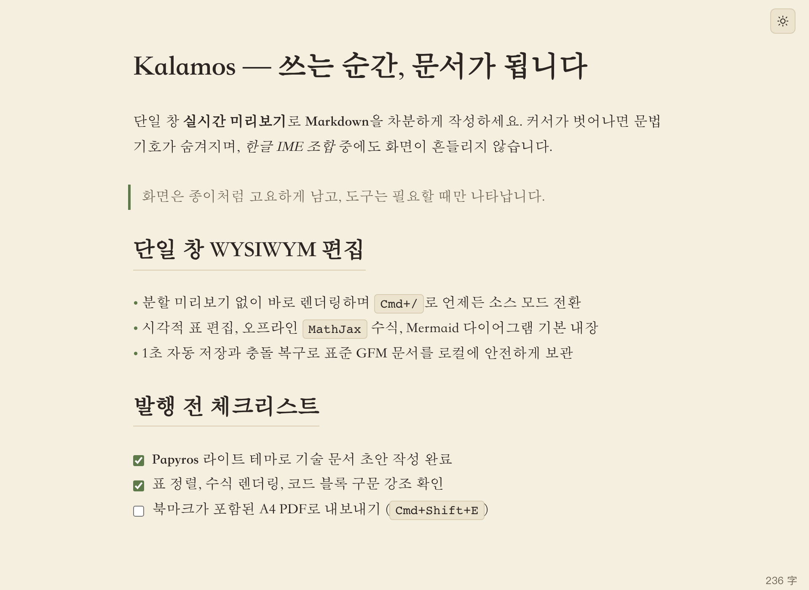
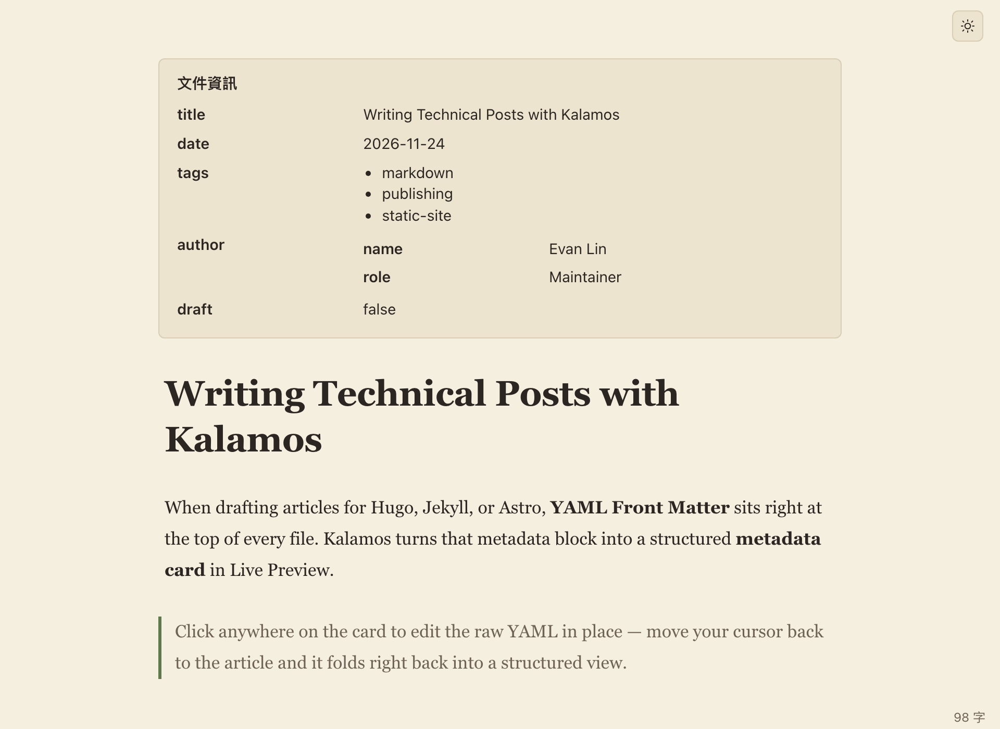
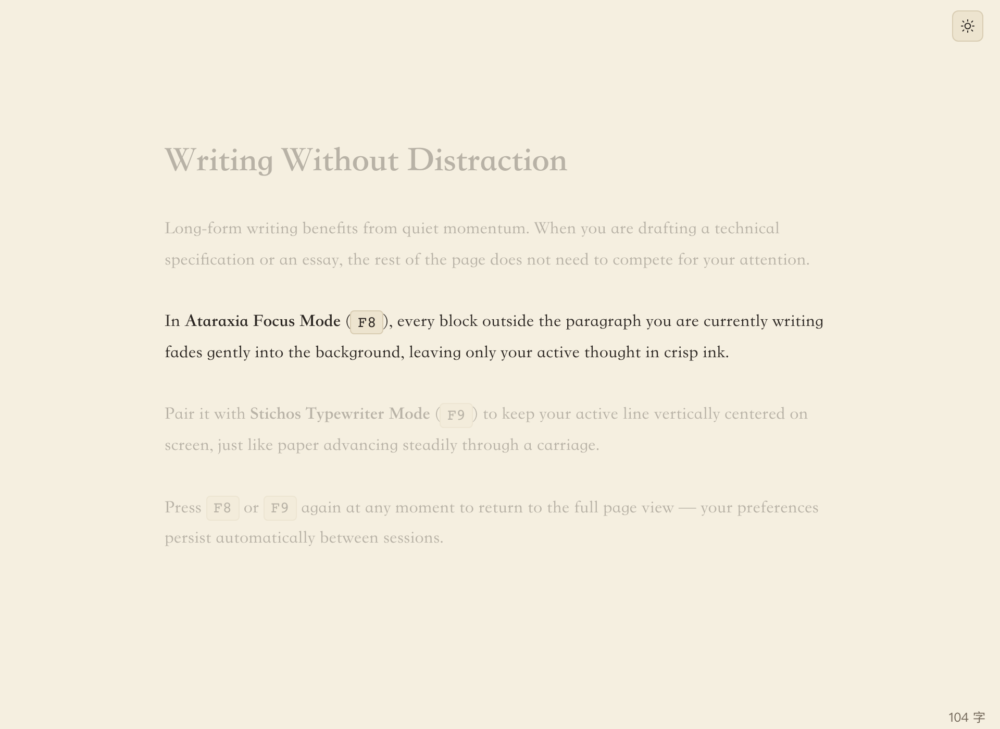
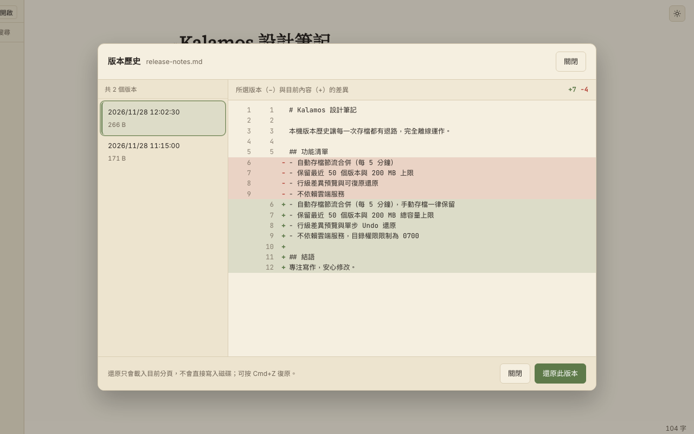
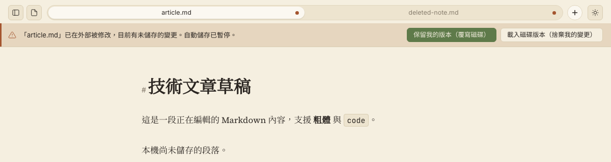
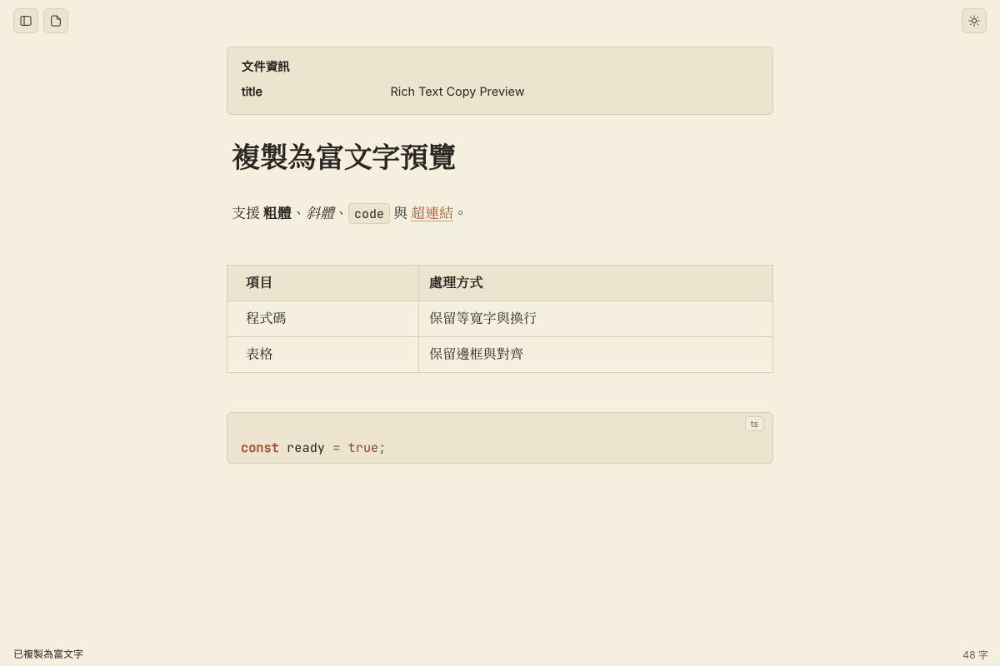
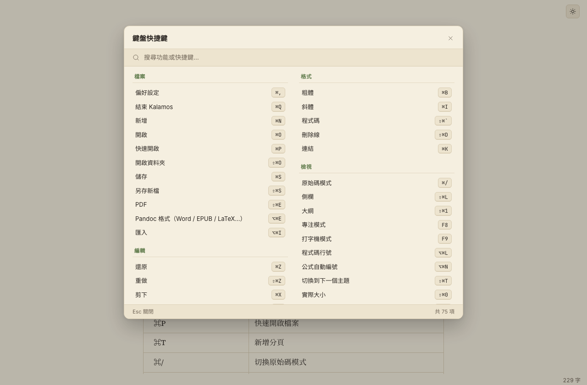

빠른 열기 및 최근 파일
Cmd+P(Windows는 Ctrl+P)로 열려 있는 폴더의 Markdown 파일을 퍼지 검색하고 일치 문자를 강조 표시합니다. 비어 있을 때는 폴더에 관계없이 최근 연 파일 20개를 보여주며, Cmd+Enter 새 탭 열기와 파일 > 최근 항목 열기를 지원합니다.
쓰는 순간, 그대로 문서가 됩니다.
macOS와 Windows를 위한 조용한 실시간 미리보기(WYSIWYM) Markdown 에디터. 고대 그리스어 '갈대 펜'에서 이름을 따온 Kalamos는 표준 GFM 문서를 입력하는 즉시 단정한 종이처럼 렌더링합니다 — 무료, 오프라인, 계정 불필요.
Windows 버전은 실험적이며 미서명 상태입니다(SmartScreen 경고 시 「추가 정보」→「실행」). macOS 버전은 미공증 상태입니다(최초 실행 시 우클릭 → 「열기」).

좌우 분할 창을 번갈아 볼 필요가 없습니다. 닫는 기호를 입력하는 즉시 렌더링되고 커서가 벗어나면 문법 기호가 숨겨집니다. 언제든 Cmd+/로 소스 모드를 열 수 있습니다.
열려 있는 폴더의 Markdown 파일을 퍼지 검색해 일치 문자를 강조 표시합니다. 입력창이 비어 있을 때는 최근 연 파일을 보여주며, 파일 > 최근 항목 열기 메뉴도 제공합니다.
전각 문장부호 옆의 강조 구문을 정확히 처리하며, 한글·한자 등 IME 조합 중에는 장식 갱신을 멈춰 입력 화면이 흔들리지 않습니다.
독자 문법 없는 표준 GitHub Flavored Markdown 그대로 저장합니다. 원자적 파일 쓰기, 1초 자동 저장, 충돌 복구로 초안을 안전하게 지킵니다.
저장할 때마다 이전 버전을 자동으로 보관합니다. File > Browse Version History…에서 줄 단위로 차이를 비교해 현재 탭으로 복원하고, Cmd+Z로 되돌릴 수 있습니다. 기록은 로컬에만 저장됩니다.
다른 앱이나 동기화 서비스가 열린 파일을 바꾸면 자동으로 다시 불러옵니다. 저장하지 않은 변경도 있다면 배너에서 어느 쪽을 남길지 고를 수 있고, 저장 전에는 디스크 내용을 먼저 대조합니다.
Cmd+Opt+Shift+C로 선택 영역이나 전체 문서를 깔끔한 서식 있는 텍스트로 바꿔 Gmail, Google Docs, Medium, Notion에 바로 붙여넣습니다. 수식과 다이어그램은 이미지로 변환됩니다.
Cmd+Opt+/(Windows는 Ctrl+Alt+/)를 누르거나 Help > Keyboard Shortcuts…를 선택해 모든 단축키를 분류별로 보고 검색할 수 있습니다.
문서 상단의 YAML Front Matter를 깔끔한 카드로 보여줍니다. 목록과 중첩 필드를 모두 지원하며, 카드를 클릭하면 그 자리에서 바로 원문을 편집할 수 있습니다.
기본으로 시스템 언어를 따르며(OS 언어가 zh로 시작하면 번체 중국어, 그 외에는 영어), 언제든지 Preferences → General(偏好設定 → 一般)에서 앱 화면과 네이티브 메뉴 언어를 바꿀 수 있습니다.
Ctrl 키를 누른 채 마우스 휠을 굴리면 화면을 부드럽게 확대하거나 축소할 수 있으며, 보기 메뉴의 확대·축소·실제 크기 배율과 연동됩니다.
시작도 더 빨라졌습니다. 수식, 다이어그램, 내보내기 모듈을 필요할 때 불러오도록 바꿔 시작 시 불러오는 메인 번들을 약 970 kB에서 약 390 kB로 줄였습니다.
Cmd+Opt+T로 그리드 선택 대화상자를 열거나 |a|b| 입력 후 Enter로 즉시 표를 만드세요. 셀 안에서 바로 편집하고, 경계선 드래그로 너비를 조절하며, 본문을 가리지 않는 플로팅 툴바로 구조를 다듬을 수 있습니다.

내장 MathJax 3로 인라인 $...$ 및 블록 $$...$$ 수식(AMS, mhchem 화학식, bbox 포함)을 렌더링하고, Mermaid·flowchart.js·시퀀스 다이어그램을 테마 색상에 맞춘 SVG로 그립니다.

종이 테마와 어우러지는 저채도 구문 강조와 합자(ligature) 지원 JetBrains Mono를 내장했습니다. Cmd+Opt+L로 줄 번호 표시를 언제든 켜고 끌 수 있습니다.

블로그 글이나 정적 사이트 초안도 첫 줄부터 단정하게 정리됩니다. 문서 상단의 YAML Front Matter를 목록과 중첩 필드까지 갖춘 구조화 카드로 보여주고, 클릭하면 그 자리에서 원문을 바로 편집할 수 있습니다.

Cmd+P로 문서 사이를 빠르게 오가고 여러 초안을 탭으로 열어 두세요. 에디터를 벗어나지 않고 글쓰기부터 내보내기까지 자연스럽게 이어집니다.

Cmd+P(Windows는 Ctrl+P)로 열려 있는 폴더의 Markdown 파일을 퍼지 검색하고 일치 문자를 강조 표시합니다. 비어 있을 때는 폴더에 관계없이 최근 연 파일 20개를 보여주며, Cmd+Enter 새 탭 열기와 파일 > 최근 항목 열기를 지원합니다.
한 창에서 여러 문서를 탭으로 관리하세요(Cmd+T / Cmd+W / Ctrl+Tab). 드래그 순서 변경과 독립된 실행 취소 기록을 지원하며, 문서 내 찾기·바꾸기(Cmd+F), 폴더 검색(Cmd+Shift+F), 환경설정(Cmd+,)을 함께 제공합니다.
이미지를 끌어다 놓거나 붙여넣으면 문서 옆 assets/ 폴더에 저장하고 상대 경로를 삽입합니다. <img> 크기·zoom 조절, 정적 블로그 루트 폴더(typora-root-url 또는 Cmd+Opt+R), settings.json 기반 CLI 업로더 연동을 지원합니다.
Cmd+Shift+E로 제목 계층에 맞춘 중첩 북마크가 포함된 A4 PDF를 내보냅니다(수식·다이어그램 포함, macOS는 PDFKit, Windows는 헤드리스 Edge/Chrome 사용). 선택적으로 Pandoc을 설치하면 DOCX·ODT·LaTeX·MediaWiki·EPUB 내보내기와 문서 가져오기도 바로 사용할 수 있습니다.
Cmd+Shift+O로 로컬 폴더를 열어 파일 트리·파일 목록·개요 패널을 오가며 탐색하세요. iCloud Drive와 Dropbox 폴더의 외부 변경을 실시간 반영하며, 상태 표시줄에서 선택 영역 포함 단어 수와 읽기 시간을 확인합니다.
마우스 오버 미리보기와 클릭 이동을 지원하는 각주, 클릭 편집 YAML 문서 정보 카드, 번체 중국어·영어 인터페이스 전환, Ctrl + 휠 확대/축소, 제목 북마크 복사(Cmd+Shift+C), 오프라인 GitHub 이모지 자동 완성(:smile), 영문·전각 괄호 자동 짝 맞추기를 기본 제공합니다.
따뜻한 Papyros, 눈이 편안한 Melan, 거의 검은 Nyx, 시스템 자동 전환을 Cmd+Shift+T로 즉시 전환하세요. themes/ 폴더에 CSS 파일을 넣으면 색상, 글꼴 크기, 양쪽 정렬, 자동 제목 번호까지 자유롭게 꾸밀 수 있습니다.

Ataraxia 집중 모드(F8)로 현재 문단 외의 모든 블록을 부드럽게 흐리고, Stichos 타자기 모드(F9)로 입력 줄을 화면 세로 중앙에 유지하세요.

Kalamos는 저장하기 직전의 디스크 내용을 로컬에 보관합니다. File > Browse Version History…에서 버전을 고르면 현재 내용과의 차이를 줄 단위로 확인하고 한 번에 복원할 수 있습니다.

열린 파일이 다른 편집기나 git, iCloud·Dropbox 동기화로 바뀌면, 저장하지 않은 변경이 없을 때는 자동으로 다시 불러오고 충돌이 있을 때는 배너로 선택을 맡깁니다.

Cmd+Opt+Shift+C를 누르거나 Edit > Copy as Rich Text를 선택하면 선택 영역이나 전체 문서를 간결한 서식 있는 HTML과 일반 Markdown으로 복사합니다. Gmail, Google Docs, Medium, Notion에 서식을 다시 손볼 필요 없이 붙여넣을 수 있습니다.

키보드에서 손을 떼지 않고 모든 주요 기능을 실행할 수 있습니다. Windows에서는 Cmd가 Ctrl, Opt가 Alt에 대응됩니다(Ctrl+Tab과 Ctrl + 휠은 양쪽 동일).
전체 목록은 Cmd+Opt+/를 누르거나 Help > Keyboard Shortcuts…를 선택해 분류별로 보고 검색할 수 있습니다.

Kalamos(κάλαμος, 발음: KA-la-mos)는 고대 그리스인들이 파피루스 위에 글을 쓸 때 사용하던 '갈대 펜'을 뜻합니다. 앱 안의 주요 이름들도 이 모티프를 따릅니다: Papyros(파피루스 라이트 테마), Melan(먹색 다크 테마), Nyx(밤빛 근흑 다크 테마), Ataraxia(흔들림 없는 집중 모드), Stichos(한 줄에 집중하는 타자기 모드).
아니요, 선택 사항입니다. 일상적인 편집, 실시간 미리보기, MathJax, Mermaid 다이어그램, 북마크 포함 네이티브 PDF 내보내기는 모두 추가 설치 없이 바로 작동합니다.
DOCX, ODT, LaTeX, MediaWiki, EPUB 내보내기나 해당 형식을 Markdown으로 가져올 때만 Pandoc(macOS는 brew install pandoc, Windows는 winget install JohnMacFarlane.Pandoc, 가져오기는 2.15 이상)을 설치하면 됩니다.
네. 계정 가입, 평가판 제한, 라이선스 키, 텔레메트리가 전혀 없습니다. 서체, MathJax, Mermaid, 이모지 데이터가 모두 앱 안에 포함되어 오프라인에서도 완벽히 작동하며 문서는 표준 .md 파일로 로컬에 보관됩니다.
현재 릴리스 빌드는 Apple 공증이 적용되어 있지 않습니다. Kalamos.app을 /Applications에 옮긴 뒤 Finder에서 우클릭 → 열기를 선택(또는 시스템 설정 → 개인정보 보호 및 보안에서 허용)하거나, 터미널에서 아래 명령으로 격리 속성을 해제할 수 있습니다:
xattr -cr /Applications/Kalamos.app
Windows 지원(Windows 10 / 11 x64)은 현재 실험적이며 코드 서명이 되어 있지 않습니다. -setup.exe 또는 .msi 설치 프로그램을 실행할 때 Windows Defender SmartScreen 경고가 나타나면 추가 정보 → 실행을 클릭하세요.
실행에는 Microsoft Edge WebView2 런타임이 필요합니다. Windows 11에는 기본 탑재되어 있으며, Windows 10에 미설치된 경우에도 설치 프로그램 내장 부트스트래퍼가 자동으로 설치합니다.
네. :root[data-custom-theme] 선택자를 사용한 .css 파일을 ~/Library/Application Support/io.kalamos.app/themes/(macOS) 또는 %APPDATA%\io.kalamos.app\themes\(Windows)에 넣으면 색상, 글꼴, 자동 제목 번호를 자유롭게 바꿀 수 있습니다. 이미지 호스팅은 같은 폴더의 settings.json에 uploadCommand(예: PicGo CLI)를 설정한 뒤 Cmd+Opt+U로 실행합니다.
GitHub Releases에서 최신 macOS 또는 Windows 버전을 내려받거나 소스에서 직접 빌드해 보세요.
Windows 버전은 실험적이며 미서명 상태입니다(SmartScreen 경고 시 「추가 정보」→「실행」). macOS 버전은 미공증 상태입니다(최초 실행 시 우클릭 → 「열기」).
Kalamos는 무료 오픈소스 프로젝트입니다. 마음에 드셨다면 커피 한 잔으로 응원해 주세요. 앞으로도 무료 제품을 계속 만들어 가는 데 큰 힘이 됩니다.